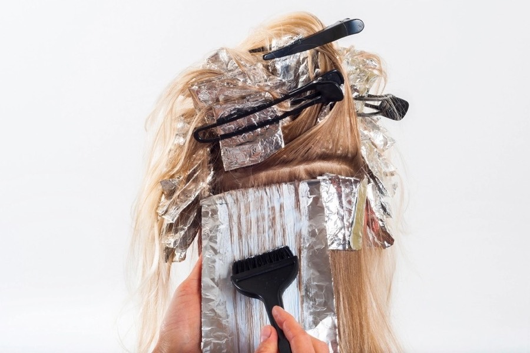
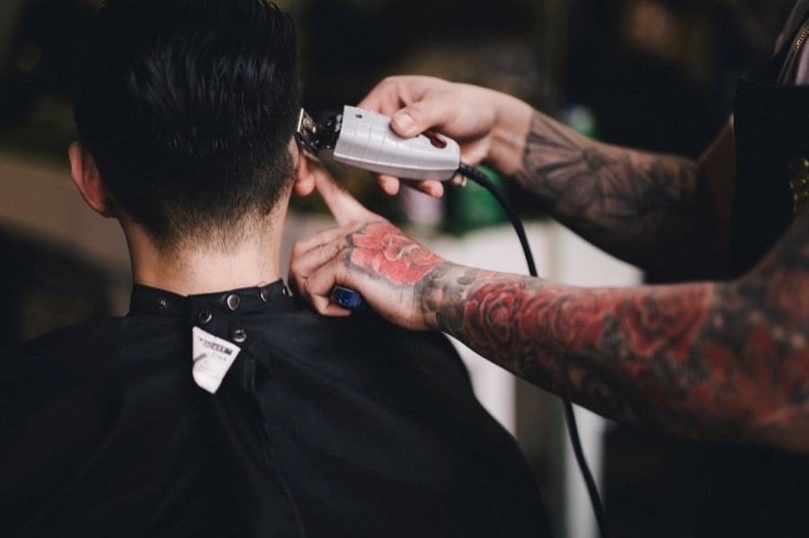
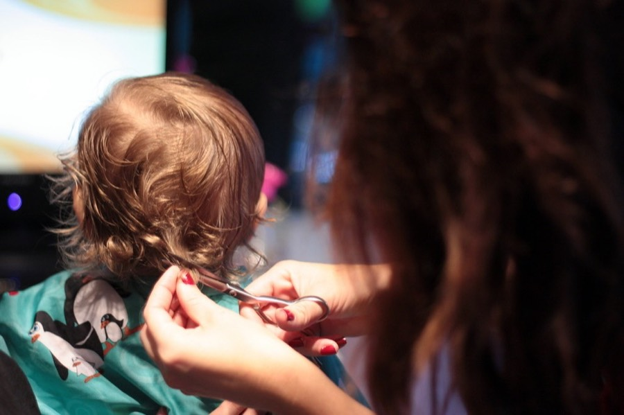
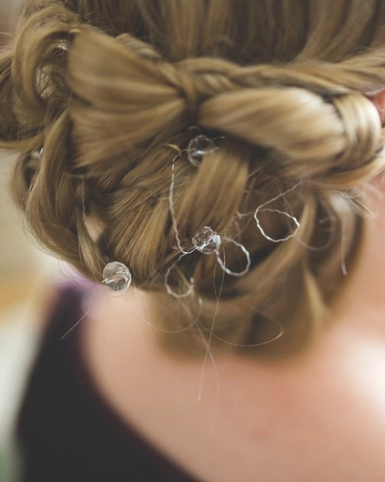
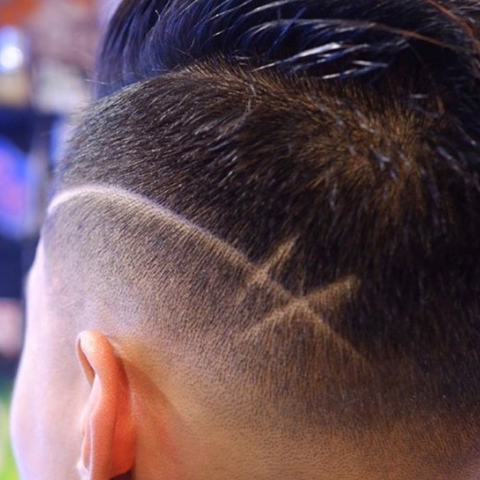
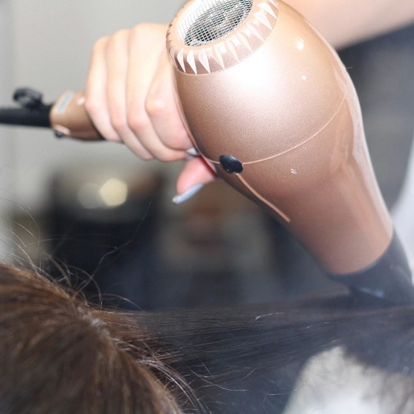
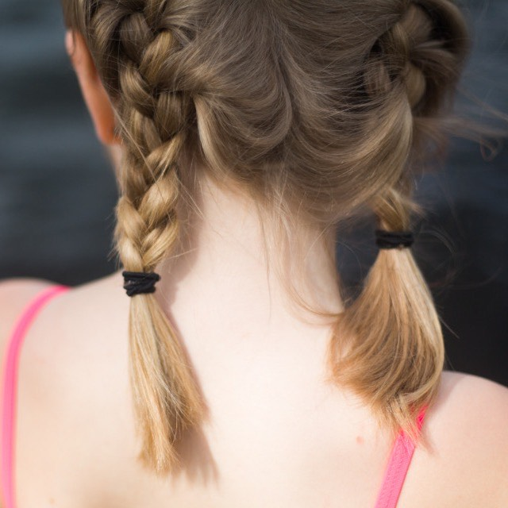

Balayage for mom, a clean fade for dad, braids for picture day and
the baby's first haircut. Three stylists, one barber, and a couch by the
window for whoever's waiting their turn.
Women · Men · KidsKids' cuts from $20Open 7 days, late Thu & FriQuinceañera trial runs4.9 ★ from 412 Google reviews
The menu · el menú
Cuts, colour & styling
Every price is where the service starts. Long, very thick or very curly hair
takes longer and can cost more — your stylist tells you the number before
the first foil goes in, not at the register.

Women
Damas
Cut, colour, texture
Cut & blow-dryConsultation, wash, cut and a round-brush finish · 1 hr
from$48
BlowoutWash and blow-dry, sleek or full of volume; add curls for $10 · 45 min
from$38
Root colourUp to 1½ inches of regrowth, one shade, blow-dry included · 1½ hr
from$70
All-over colourSingle process roots to ends, gloss and blow-dry · 2 hr
from$95
HighlightsFoils, partial (top and sides); full head from $150 · 2–2½ hr
from$110
BalayageHand-painted, with toner and blow-dry; bring photos · 3–4 hr
from$185
PermBody wave or spiral curl, trim included · 2½ hr
from$95
Keratin smoothingLess frizz and half the blow-dry time for 3–4 months · 3 hr
from$220
UpdoPinned style for a party, baptism or night out · 1 hr
from$75
Colour correction or going lighter than two shades? Book the free
15-minute consultation first. New colour clients get a quick patch test 48 hours
before — walk in for it any day.

Men & boys
Caballeros
13 and up
HaircutClipper and scissor, hairline line-up, wash and style · 30 min
from$28
FadeLow, mid, high or skin, blended by hand, line-up included · 40 min
from$32
TaperClean taper at the neck and sideburns, length kept on top · 30 min
from$30
Scissor cutAll shears, for longer hair and textured tops · 45 min
from$38
DesignsLines, a hard part or a freehand design, added to any cut · 15 min
from$8
Grey blendingSemi-permanent colour that softens grey instead of hiding it · 20 min
from$30
Beto's barber chair is by the window. He takes walk-ins until 30 minutes
before close; the rest of us cut clipper cuts too when he's booked.

Kids
Niños
12 and under
Kids' cutBoys or girls, clippers or scissors · 25 min
from$20
Kids' fadeLine-up included; add a design for $5 · 30 min
from$24
First haircut · primer cortePhoto in the chair, a certificate and a curl to take home · 20 min
flat$22
Braids · trenzasTwo Dutch braids, a crown braid or ribbons for picture day · 30 min
from$20
Booster seat, cartoons on the TV and a paleta for anyone who sits
(mostly) still. Back-to-school week in August: kids' cuts $15, Monday to Thursday,
walk-ins only.

Trial run included
Quinceañeras · bodas · prom
Big-day hair, practised first.
Every occasion package starts with a trial run four to six weeks out.
Bring the dress colour, the corona or veil, and a few photos you love. We build the
style, photograph it from every side and write down every pin, so the morning of
goes exactly the same — only faster.
La Quince
Trial run, then the day-of updo or curls, the corona pinned to last through
the vals and the surprise dance, and a travel spray for touch-ups.
$185Damas & mom from $55 each
La Novia
Trial run, then the day-of bridal style, veil placement, and a plan for taking
the veil out before the reception without undoing the hair.
$225Bridesmaids from $60, mothers from $55
Prom night
Updo, half-up or Hollywood waves. The trial is optional ($40). Groups of three or
more save $10 each — book three weeks ahead in April and May.
$75from, per person
4–6 weeks before
The trial run
Ninety minutes with your stylist, photos from every side and a written pin map.
$65 on its own, included in every package.
The week of
Colour & trim
Refresh the roots, dust the ends and add a gloss so the colour photographs rich,
not brassy.
The morning
We open early
Saturday parties of four or more start from 7am. The quinceañera or bride sits last,
so her hair is the freshest in the room.
Six or more in the party? We close the salon to walk-ins for your
morning. A $50 deposit holds the date and comes off the bill.
Behind the chairs
Three stylists and a barber
Everyone here cuts women's, men's and kids' hair. The specialties are who to ask for
when it matters. All four speak Spanish; Kim also speaks Vietnamese.
MR
Marisol Reyes
Owner · colour · 22 years
Opened Casa Tijera in 2009 after five years behind a chair in Tustin. Balayage, grey
coverage that doesn't look flat, and the colour corrections other salons send her.
Balayage
Colour correction
Grey coverage
Works Tuesday to Saturday
MTWTFSS
BC
Beto Carrillo
The barber chair · 12 years
Fades that grow out clean for three weeks, tapers, hard parts and whatever design
your son saw online. Fast with kids who can't sit still.
Skin fades
Designs
Tapers
Works Wednesday to Sunday
MTWTFSS
YO
Yesenia “Yesi” Ortiz
Occasions & texture · 9 years
Has pinned more than three hundred quinceañera coronas and still practises updos on
quiet Mondays. Also our keratin and perm specialist.
Updos
Keratin
Perms
Works Thursday to Monday
MTWTFSS
KT
Kim Tran
Cuts & kids · 7 years
Precision bobs, long layers and the calmest first haircuts on Fourth Street. Grew up
two blocks away and takes most of the weekday walk-ins.
Bobs & layers
First haircuts
Clipper cuts
Works Monday to Wednesday, Friday and Saturday
MTWTFSS
Lookbook
Recent work from the chairs
Screenshot the one you like and show your stylist — it's the quickest way to
explain the colour or cut you have in mind. New photos every week on Instagram,
@casatijera.
MarisolBlack-cherry all-over colour, worn half-up

BetoMid skin fade with a freehand XMarisolCopper gloss on natural curls

KimRound-brush blowout, halfway there

YesiTwo Dutch braids for a long day
No appointment? No problem
Walk in, sit down.
Walk-ins are welcome every day for cuts, fades, blowouts and kids' cuts.
Put your name on the list by the door, or call and we'll add you from the phone.
Quietest on weekday mornings. Busiest on Saturdays after 11 and the week before school starts.
Last walk-in one hour before close — 30 minutes for Beto's chair.
Colour, highlights, balayage, perms and keratin are by appointment. They take two to four hours of a stylist's day.
Se habla español
Aquí se habla su idioma.
Todo el equipo de Casa Tijera habla español. Pase sin cita para cortes de dama,
caballero y niños, o llámenos y le apartamos su lugar en la lista.
Para tinte, mechas, balayage, permanente, keratina o peinados de quince y de boda,
haga su cita por teléfono o con el formulario. Pregunte por la prueba de peinado.
From 412 reviews on Google. Mostly about Marisol's colour, Beto's fades, and how
patient everyone is with little kids.
“Marisol fixed a box-dye disaster I'd been hiding under a bun for a
year. Two visits, price told to me up front, and now I actually wear my hair
down.”
Daniela R.Colour correction · Santa Ana
“Took my son for his first haircut and Kim was so patient with him.
They gave us a little envelope with one of his curls in it. My mom cried.”
Jessica M.First haircut · Tustin
“Yesi peinó a mi hija y a sus seis damas para sus quince.
La corona no se movió en toda la noche, ni con el baile sorpresa.”
Leticia G.Quinceañera · Santa Ana
“Beto's fades grow out clean. I bring my two boys on Sunday mornings
and the three of us are done in an hour.”
Marcos A.Fades · Garden Grove
Hours
Monday
10am – 6pm
Tuesday
9am – 7pm
Wednesday
9am – 7pm
Thursday
9am – 8pm
Friday
9am – 8pm
Saturday
8am – 6pm
Sunday
9am – 3pm
Occasion parties from 7am on Saturdays, by appointment.
Last walk-in one hour before close.
Find us
412 E. 4th Street Santa Ana, CA 92701
On Calle Cuatro, a few blocks east of Main Street. Look for the marigold awning and
the scissors painted on the window.